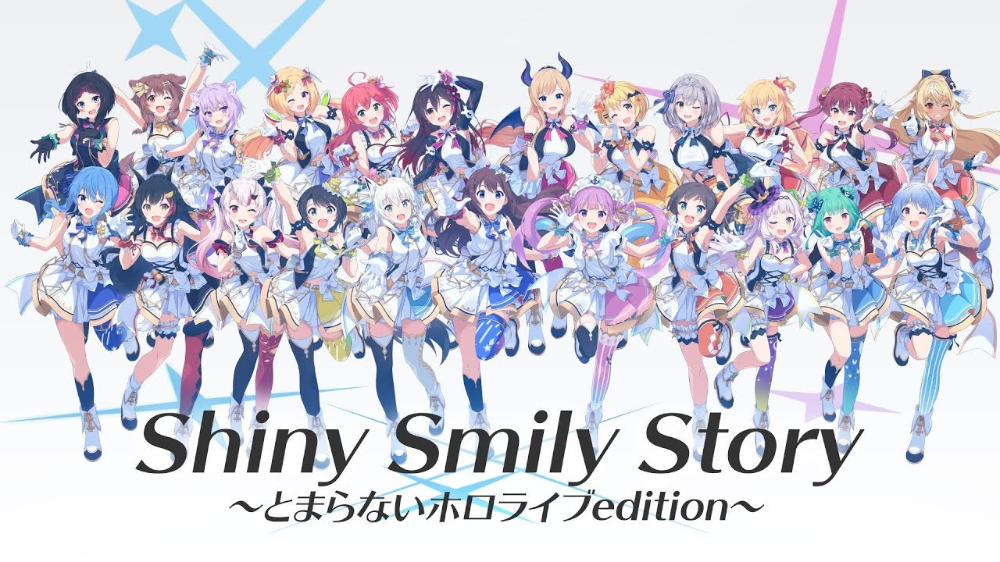
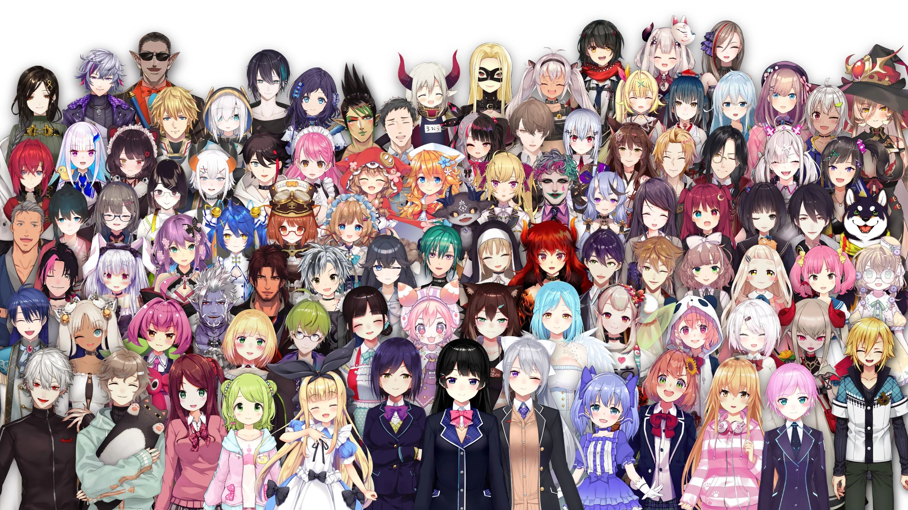
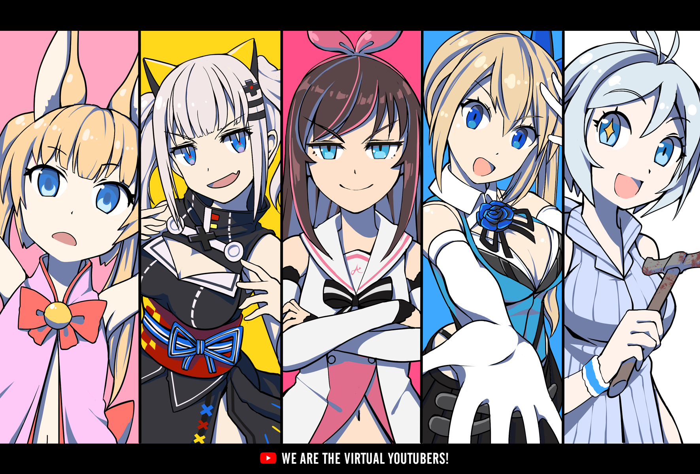

快速了解Vtuber這個產業



簡介
虛擬YouTuber是以YouTuber為平台直播影片(生放送)和投稿影片的創作者。
虛擬YouTuber最早在日本發源。該名詞由2016年12月開始活動的絆愛首次使用，定義爲「由電腦圖形所繪製的插畫風格的美少女YouTuber」。雖然在此之前就已經有類似的虛擬角色出現，但是當時這類虛擬角色並未定性爲虛擬YouTuber。因此在一段時間，虛擬YouTuber是絆愛的代名詞。
2017年開始，隨著諸如「電腦少女小白」、「Mirai Akari」、「バーチャルのじゃロリ狐娘Youtuberおじさん」、「輝夜月」等擁有大量粉絲的虛擬YouTuber的加入，原先作爲絆愛的代名詞的虛擬YouTuber一詞被重新定義，並逐漸廣泛使用。
截至2018年5月28日，虛擬YouTuber總計有3000人，訂閱者共1089萬，影片點擊率達到6億9000萬次以上。到2019年4月，虛擬YouTuber總計有約6000人，訂閱者共約2000萬。隨著虛擬YouTuber迎來熱潮，一些虛擬YouTuber組織也隨即興起，其中比較有名的有Upd8、Nijisanji、hololive等。
在covid-19疫情爆發後，人們減少外出活動，從而帶動了新興的Vtuber產業蓬勃發展
技術
VTuber的誕生主要是利用電腦製作出2D或3D的角色模型，並使用臉部辨識或是動態捕捉的技術使角色活動，再經由背後扮演角色的「中之人」操作，使得虛擬角色活靈活現，能夠實況遊戲、唱歌、跳舞，還有與觀眾進行互動。
依據VTuber的營運背景，可以大致區分為背後擁有企業支撐的「企業勢」，以及個人包攬所有作業的「個人勢」，最大的差異主要是資金和設備資源的差距。但回歸到內容產出者的本質，想要長久的經營角色，如何展現個人魅力吸引觀眾，其實才是成功與否的關鍵。
彩虹社(にじさんじ)
Ichikara株式會社所開發的虛擬YouTuber手機應用程式，使用iPhone X的面孔捕捉功能讓2D角色獲得表情並進行直播。同時也是自家運營VTuber業務的事務所名稱。
Nijisanji應用於2月8日發布，原本只是聘請虛擬YouTuber來為手機應用程式進行宣傳，不過意想不到的是月之美兔的爆紅而促成全體Nijisanji虛擬YouTuber人氣上升，遂建立事務所，投身於虛擬YouTuber事業，之後也加入新成員並展開各種虛擬YouTuber活動及商品販賣。
hololive production
hololive production是日本科技公司COVER株式會社旗下的經紀公司品牌，以經營虛擬YouTuber為其主要業務，除了在日本外，也在其他地區擁有並經營VTuber。hololive production起初稱為hololive，名稱取自於同公司於2017年12月21日發行的同名行動應用程式，後來於2019年12月2日將hololive與其餘的兩個品牌holostars和INNK Music合併，並統一使用現名。
2017年9月7日，COVER第一位虛擬YouTuber時乃空出道。同年12月，COVER正式發布hololive應用程式。
2018年5月2日至13日，hololive官方進行了出演者招募，並於5月9日至18日開展選拔，最終「hololive一期生」於6月1日正式出道。
2019年8月9日，hololive在C96發布其第一首官方歌曲《Shiny Smily Story》，作為「HOLOLIVE SUMMER '19」活動的一環，並公布試聽PV。隨後試聽PV於8月15日19時（UTC+9）在YouTube發布，完整版也於9月16日開售，見下文「音樂活動」。
2020年10月22日，hololive English所屬的Gawr Gura的YouTube頻道突破一百萬訂閱，成為最快拿到這一成就的虛擬YouTuber。她也是繼絆愛，輝夜月後，第三個突破百萬訂閱的虛擬YouTuber。截至2021年5月初，Hololive總共已有14名VTuber的YouTube頻道突破一百萬訂閱。Gawr Gura也於2021年1月18日成為hololive中首位突破兩百萬訂閱，同時也是全世界虛擬YouTuber訂閱數排名第二的VTuber。
相關資源
iClone7
即時3D動畫製作軟體，能與業界標準的所有 3D 軟體與遊戲引擎如：Unity、Blender 等無縫接軌，被許多獨立製片、專業工作室、視效預覽、作家、導演、動畫師、廣告商或任何希望能迅速將創意具體化的人廣泛使用。
傳送門
Character Creater 3
3D人物建模軟體，可製作動畫、遊戲AR與VR角色，可自定義角色編輯製作。
傳送門
Motion LIVE
全身動作捕捉平台，可連接多個業界慣用的知名動作捕捉軟硬體設備，同時為 3D 角色臉部、手部和身體製作動畫。
傳送門